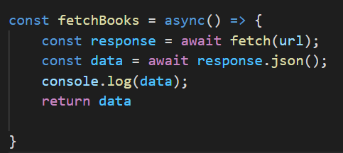
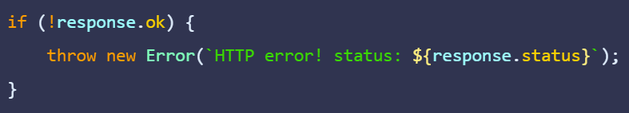

Fetch API is an asynchronous web API that is used in JavaScript and other programming languages, it returns data in the form of promises.
In many cases you have used a Web API without knowing that you are in fact using an API. One of them is called Fetch(), and it is used to make requests to the API.
Let's dive a little into this...
Fetch
In the simplest forms fetch() lets you talk with the APIs that you want to recieve data from. It uses promises to make network requests over the HTTP protocol. Fetch is included in all modern browers, meaning you won't need to import any third-party libraries through something like npm. You can use Fetch right through the fetch() method. It takes in an arguement-- the endpoint's URL in which you want to return the data from.
The Response and object?
Fetch uses two objects, request and response. This response object holds the data that has been sent by the API. Fetch sends the request and then returns a promise (a promise represents an operation that hasn't been completed yet), which is then resolved to the response when the request is completed. If that request fails, the promise will be rejected. In order to get the data that is recieved in the response, you will need to wait for this promise to resolve or complete into the response. This is typically done by the use of the .then to capture the response.
Using async/await within fetch()

In some opinions a better and cleaner way of handling the promise is through the use of the async/await keywords. You would start by specifying the caller function as async and then use await to handle the promise. Because of the await keyword, the asynchronous function pauses until the promise that is returned hits the resolved status. The response is then assigned to response one the request completes.
Data Extraction...sounds so serious

Now although we have the response, we can't quite access the data just yet. The response is returned by await fetch supporting multiple functions for the various formats. This will include the response.json which returns the data as a JSON Object. The responses is not limited to the JSON Object though. Now each of the formats including the ones not mentioned return a promise which resolves into the specific data form. We would then use the await keyword again to extract the APIs response, taking the following form:
We would want to handle errors if and potentially when the request fails. With async/await, we could use the .ok() method to handle the errors projected.

And that is pretty much the jist of it. At this point you should be all ready to use async/await to fetch data from your API.